External S-TAP configuration
MYSQL Traffic visibility
- One of the databases working on raptor machine is MySQL. Let’s check connectivity and confirm MySQL session audibility. Login to the raptor and execute command:
mysql -
Inside MySQL session execute (first command reveal information that session is not encrypted):
1 2 3 4 5
SHOW SESSION STATUS LIKE 'Ssl_cipher'; SELECT 'PLAINTEXT SESSION'; exit;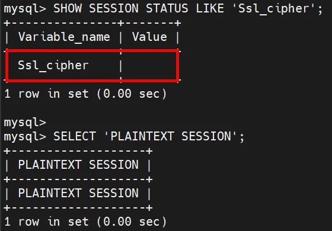
-
Login again but this time refer to IP address of raptor machine.
mysql -h raptor.demo.guardium -
Execute these commands in the session (notice, that session is encrypted):
1 2 3 4 5
SHOW SESSION STATUS LIKE 'Ssl_cipher'; SELECT 'ENCRYPTED SESSION SESSION'; exit;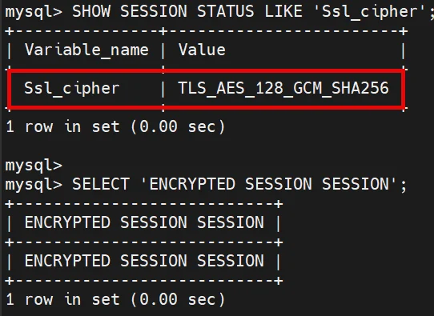
-
Go to Full SQL (Training) report in coll1 dashboard and notice that only SQL’s related to plaintext session have been audited.
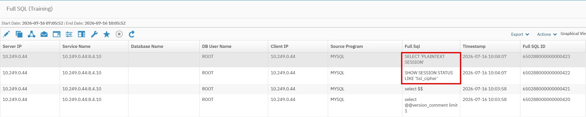
-
There is no ATAP or EXIT for MySQL. In case of encrypted traffic for MySQL we need to use different method of monitoring which is not based on STAP.
{kind=link}
{kind=link}
{kind=link}
Docker preparation
-
Install
podman-dockerandskopeopackages.dnf -y install podman-docker skopeo -
To check the latest available tag of External S-TAP image execute:
skopeo list-tags docker://icr.io/guardium/guardium_external_s-tap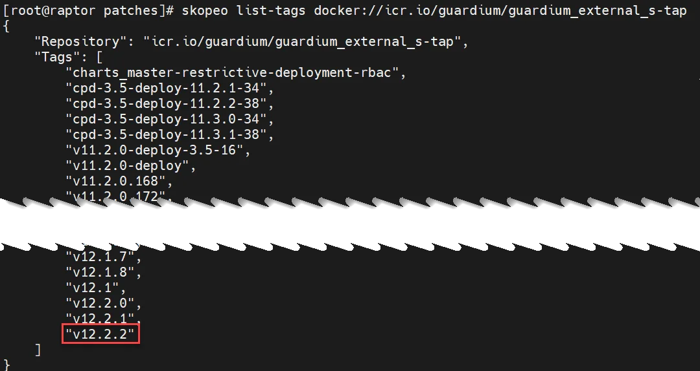
-
Pull External S-TAP image with the latest tag for Guardium 12.2 (screenshots presents example, use the latest image version).
docker pull icr.io/guardium/guardium_external_s-tap:v<latest_12.2>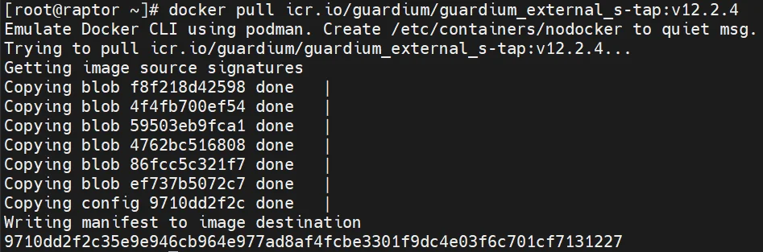
-
List local images and write in notebook container name and tag
podman images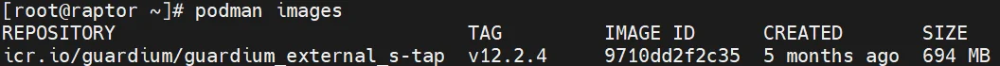
{kind=link}
{kind=link}
{kind=link}
SSL certificate setup
-
On raptor create directory for CA, which we will deploy to serve External S-TAP (ETAP) demands.
mkdir -p /opt/ETAP/ca -
Login to coll1 cli and request certificate for ETAP instance (CSR request) using command:
create csr external_stapInsert certificate request parameters:
- unique alias: raptor-mysql-etap
- etap certificate common name: mysqlcoll1.demo.guardium
- organization unit name: Demo
- add additional OU: n
- organization name: Guardium
- city: <your city name>
- province: <your province name>
- country code: <your 2-digits country code>
- email of collector certificate owner, can be fake: <email_address>
- accept default algorithm: Enter
- accept default key length: Enter
- insert FQDN of your collector for SAN #1: coll1.demo.guardium
- press Enter for SAN #2: Enter
Then certificate request will be created and displayed
-
Then copy displayed Certificate Request to file on raptor -
/opt/ETAP/ca/etap.csr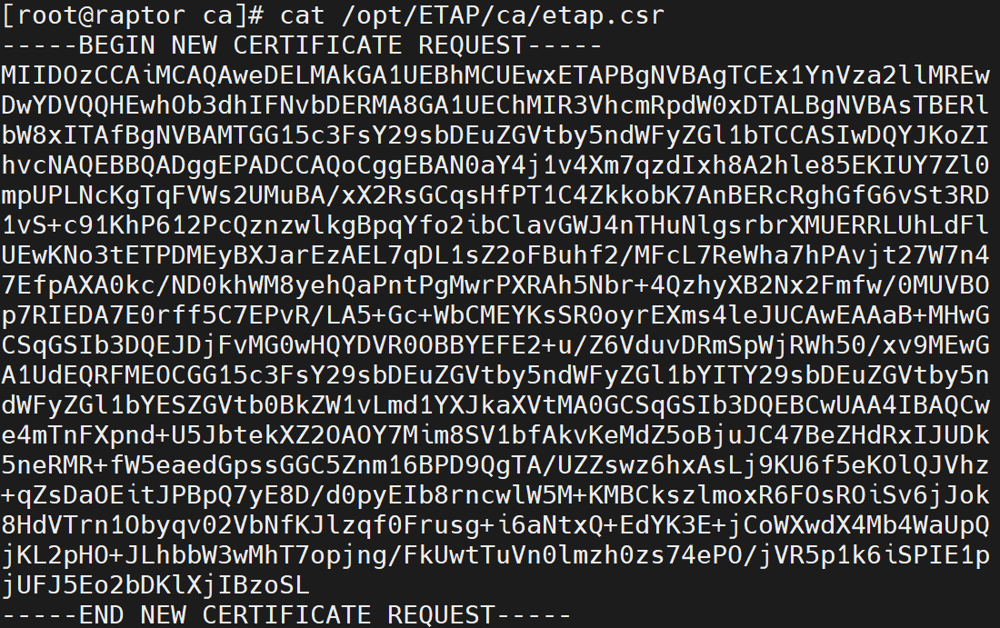
and write down in notepad entire alias and related to it token (two bottom lines)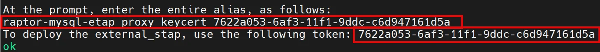
-
Now we will create new certification authority (CA) on raptor. Go to directory
/opt/ETAP/ca(where you savedetap.csrfile) and create RSA key.1 2 3
cd /opt/ETAP/ca openssl genrsa -out ca.key 2048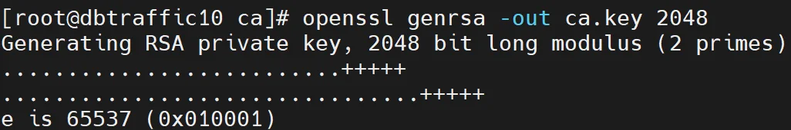
-
Create CA certificate, insert required certificate parameters
openssl req -x509 -sha256 -new -key ca.key -days 3650 -out ca.pemInsert these values:
- Country Name: <your 2-digits country code>
- Province: <your province name>
- City: <your city name>
- Organization: Guardium
- Organization Unit: Demo
- Common name: etap_ca
- e-mail of CA owner, can be fake one: <email_address>
In the current directory
ca.pemcertificate file will appear. -
Sign certificate request from coll1 using just created CA certificate.
openssl x509 -sha256 -req -days 3650 -CA ca.pem -CAkey ca.key -CAcreateserial -CAserial serial -in etap.csr -out etap.pem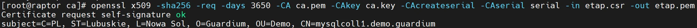
In the current directory certificate based on CSR generated on coll1 will appear inetap.pemfile. -
Install CA certificate on coll1. Provide unique name for CA (for example: etap_ca) and then insert content of
ca.pemfile from/opt/ETAP/cadirectory. Open two SSH sessions to raptor, one to get access to certificates and second where you are logged to coll1, it will simplify certificate injection.store certificate keystore_external_stap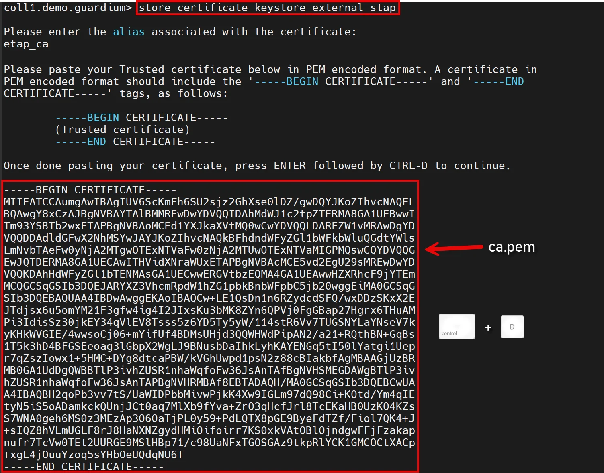
Then insert Ctrl+D keystroke. -
You should receive confirmation that CA cert has been imported.
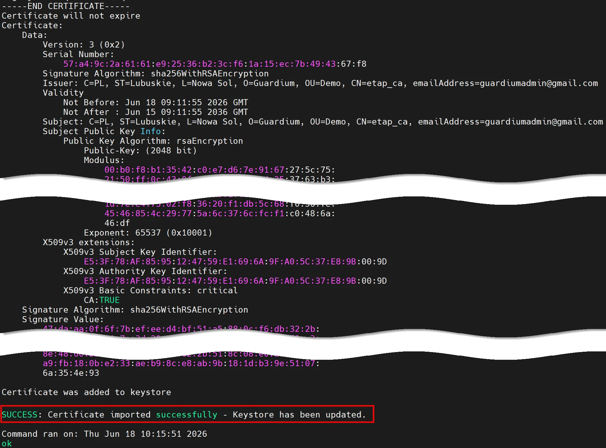
-
Now we will import to the coll1 the External S-TAP certificate -
etap.pemfile stored in/opt/ETAP/ca. You must provide as an alias the one generated during CSR request in point 3.store certificate external_stap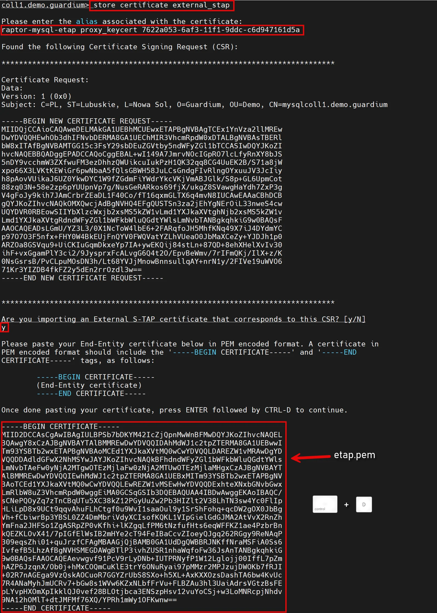
-
Confirm that import finished with success.
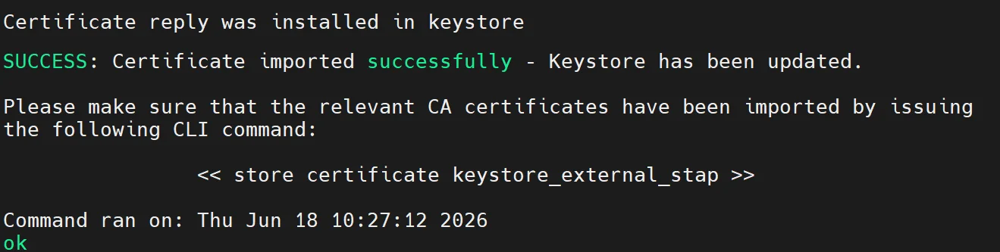
-
Execute command below to list ETAP certs stored on coll1. Confirm installation of CA and ETAP cert.
show certificate external_stap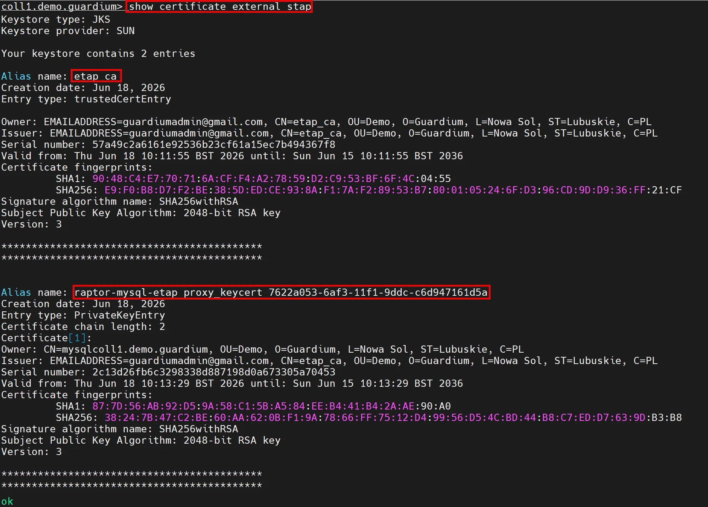
{kind=link}
{kind=link}
{kind=link}
{kind=link}
{kind=link}
{kind=link}
{kind=link}
{kind=link}
{kind=link}
{kind=link}
{kind=link}
{kind=link}
Deploy ETAP
-
On raptor go to ETAP lab directory and clone External S-TAP gitgub project.
1 2 3
cd /opt/ETAP git clone https://github.com/IBM/Guardium_External_S-TAP.git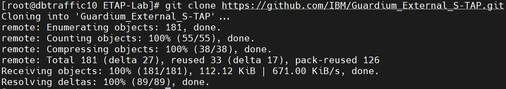
-
The script used to create the container unfortunately does not support usage of SSH on port other than 22, so temporarily add this port to the sshd service on raptor. Edit
/etc/ssh/ssh_config.d/99-cluster-hosts.confand add an additional entry Port 22 below the existing Port 2223 for line describing the Host with raptor IP address. And below add one more section which will describe the localhost as well.
Host <your_raptor_ip> Port 2223 Port 22 StrictHostKeyChecking no UserKnownHostsFile /dev/null ForwardAgent yes Host localhost Port 2223 Port 22 StrictHostKeyChecking no UserKnownHostsFile /dev/null ForwardAgent yes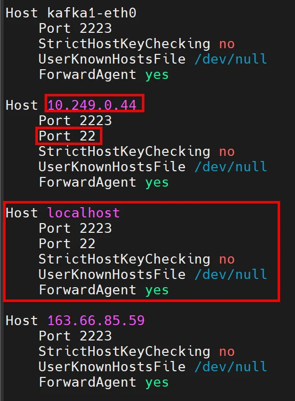
-
Restart sshd service.
systemctl restart sshd -
Set some variables to deploy ETAP silenty and minimize mistakes in the container setup.
1 2 3 4 5 6 7 8 9 10 11 12 13 14 15 16 17 18 19 20 21 22 23
STATE_FILE=mysql_etap_state DB_HOST=<raptor_ip> COLLECTOR=<coll1_ip> IMAGE='icr.io/guardium/guardium_external_s-tap:v<latest_12.2>' TOKEN=<token displayed in point 3 of SSL certificate setup section> DB_PORT=3306 DB_TYPE=mysql PROXY_WORKERS=1 PROXY_PROTOCOL=0 PORT_RANGE='63333-63333' TENANT=MYSQLETAP LBMODE=0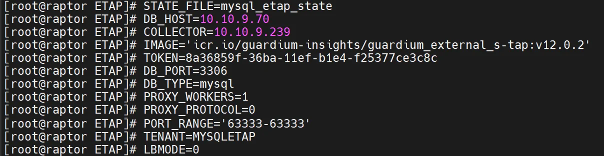
-
Go to
Guardium_External_S-TAPdirectory and start ETAP deployment script. The command will generate a long output, but the key point is to confirm at the end that the new container has started successfully.1 2 3
cd /opt/ETAP/Guardium_External_S-TAP ./container_mgmt.sh --state-file $STATE_FILE --db-host $DB_HOST --proxy-num-workers $PROXY_WORKERS --proxy-protocol $PROXY_PROTOCOL --db-port $DB_PORT --proxy-secret $TOKEN --db-type $DB_TYPE --sqlguard-ip $COLLECTOR --participate-in-load-balancing $LBMODE --tenant-id $TENANT --svc-image $IMAGE --svc-port-range $PORT_RANGE --ni --c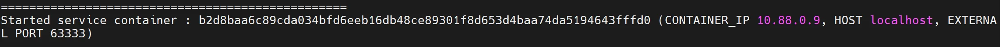
-
Check container instance status
podman ps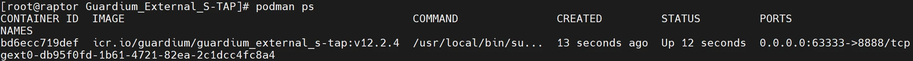
-
Login to coll1 UI and open External S-TAP Instances view and confirm that just deployed instance is correctly registered on coll1.
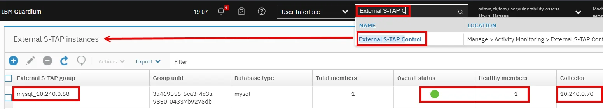
{kind=link}
{kind=link}
{kind=link}
{kind=link}
{kind=link}
{kind=link}
Check traffic visibility
-
Login to MySQL using External S-TAP proxy port and execute some SQL’s
mysql -P 63333 -h raptor.demo.guardium -
Execute some SQL’s
1 2 3 4 5
SHOW SESSION STATUS LIKE 'Ssl_cipher'; SELECT 'ENCRYPTED SESSION ON ETAP PORT 63333'; exit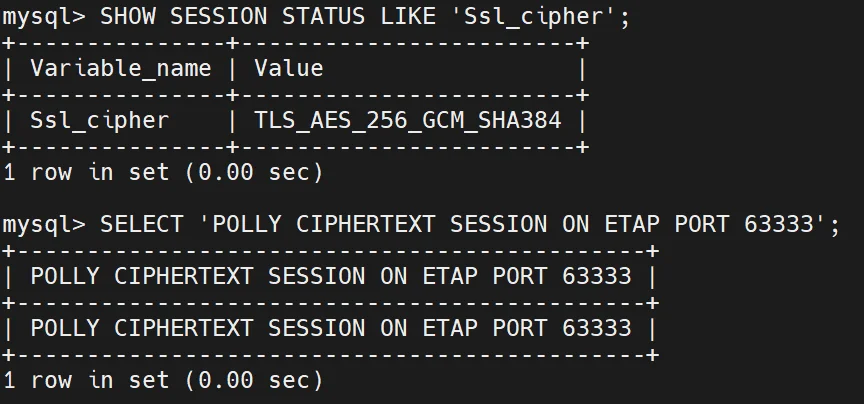
-
Check activity in Full SQL (Training) report on coll1.
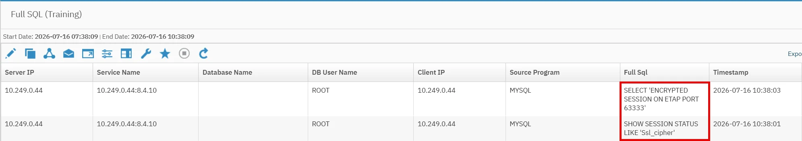
{kind=link}
{kind=link}
Automatic start of ETAP instance (optional)
-
We used the script to create the ETAP container, but it will not start automatically the ETAP after a system reboot. Use the quadlet mechanism available in podman to ensure the ETAP container is persistently available and easily manageable using standard Linux system services.
Before starting ETAP using system services, remove the currently running instance. Display the container details and record its ID.podman ps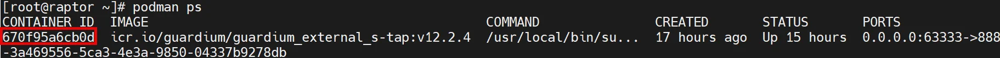
-
Stop the container and remove it.
1 2 3
podman stop <container_id> podman rm <container_id> -
Copy the service template from the helper directory to the Podman services directory.
cp /opt/guardium_tz_bootcamp_automation/upload/source_files/mysql/mysql_external_stap.container /etc/containers/systemd/mysql_etap.container -
Edit just copied file -
/etc/containers/systemd/mysql_etap.containerand set some values.Values to modify:
<latest_etap_release>: defined in Docker preparation point 2
<proxy_secret>: token displayed in point 3 od SSL certificate setup
<coll1_IP_address>: coll1 IP address
<raptor_IP_address>: raptor IP address -
Reload the network services configuration.
systemctl daemon-reload -
Start ETAP service.
systemctl start mysql_etap -
Check whether the container is running.
podman ps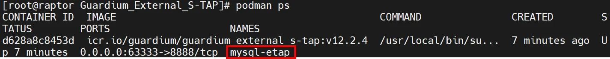
-
Finally, connect to the database through ETAP and verify that the activity is being monitored.
mysql -P 63333 -h raptor.demo.guardium -
Execute some SQL’s
1 2 3 4 5
SHOW SESSION STATUS LIKE 'Ssl_cipher'; SELECT 'ENCRYPTED SESSION ON ETAP PORT 63333 – QUADLET SERVICE'; exit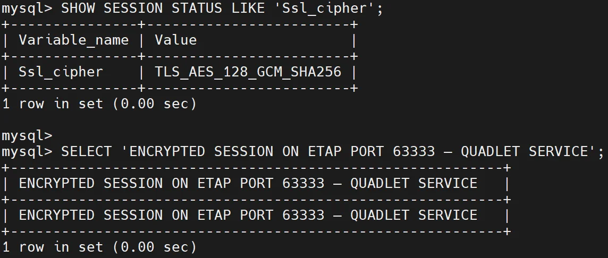
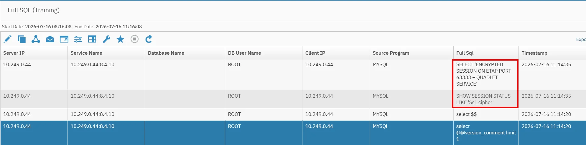
{kind=link}
{kind=link}
{kind=link}
{kind=link}
{kind=link}
Appendix
Dependencies:
This lab is required for the Oracle lab and should be completed.
Resources:
Instructor notes: